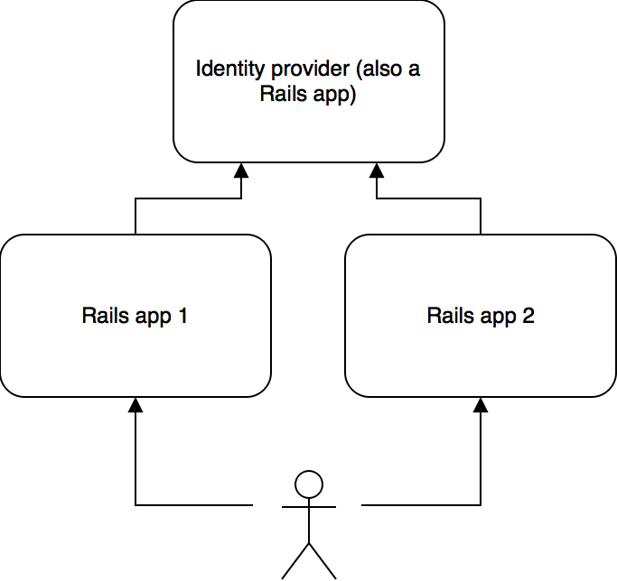

Starting out with a software project, authentication is usually quite a simple problem to solve. You simply create a users table in the database, collect users’ usernames and passwords (hashed and salted), and authenticate users against it. Just about every framework has a built-in way of doing authentication that can get you up and running within minutes. Usually this involves signing in the user once and storing the user’s ID in an encrypted cookie. Once the ID is stored in the cookie, all subsequent calls are authenticated using this stored user ID. This is a great way to get started but things start to break down a bit once your system contains more than one individual application, possibly under different subdomains, and you want the user to have a consistent authentication experience across the different parts of the system.
Since I often use Rails I will use examples that are geared towards Rails in this post. The same principles will apply in different programming languages and frameworks as well though.
Rails has a library called Devise that is just about the de-facto standard for authentication in Rails apps. Devise allows you to get set up quickly with a users table, password hashing, authentication strategies etc. Basically it allows you to call authenticate_user! (if User is the model class you are using to store user credentials) as a before_action on any controller that you only want authenticated users to have access to. Once authenticated, you can call current_user in the controller methods to access the currently logged-in user. This is a really nice and simple pattern and we would like to keep this pattern once we split our system up into several individual Rails apps.
Let’s say for instance we want to split the system up into 2 Rails apps, but we want to keep a single users table between the two apps. The architecture would have to look like this:

Let’s first look at the identity provider. In order to authenticate using a JSON web token, we need to add an authentication strategy to the Devise config. In order to encode and decode JSON web tokens, we need the jwt gem.
Add this to your Gemfile:
gem 'jwt'
Then, let’s create a class to help us easily encode and decode JSON web tokens. Add this class, along with a matching secret, to all Rails apps (including the identity provider):
class JsonWebToken
attr_reader :algorithm, :secret
def initialize(algorithm = 'HS256', secret = "your_secret_key")
@algorithm = algorithm
@secret = secret
end
def encode(payload)
JWT.encode(payload, secret, algorithm)
end
def encode_user(user)
encode({
user_email: user.email,
csrf_token: SecureRandom.base64(32),
exp: 1.weeks.from_now.to_i
})
end
def decode(token)
return HashWithIndifferentAccess.new(JWT.decode(token, secret, true, {:algorithm => algorithm})[0])
end
end
Be sure to provide a secure secret key with which to encode and decode the JSON web tokens. The class also adds a csrf_token claim to the JSON web token that will be used in Rails apps 1 and 2 to protect against cross-site request forgery. The expiry is set at 1 week.
Now we need to add a Devise authentication strategy that uses the JSON web token to authenticate the user. Since this is the identity provider service, we are going to expect the JSON web token to be contained in the Authorization HTTP header. Here is what the class looks like for the Devise authentication strategy:
module Devise
module Strategies
class JsonWebToken < Base
def valid?
headers["Authorization"].present? &&
headers["Authorization"].split(" ").size == 2 &&
headers["Authorization"].split(" ").first == "Bearer"
end
def authenticate!
if claims && claims['user_email'] && (user = User.find_by_email claims['user_email'])
success!(user)
else
fail!
end
end
# It's important that this is set to false, so that the user isn't
# stored in a cookie. The user should be authenticated on each request.
def store?
false
end
protected
def claims
@claims ||= ::JsonWebToken.new.decode(token) rescue nil
end
def token
headers["Authorization"].split(" ").second
end
end
end
end
In order for the authentication strategy above to be used, the request should contain the Authorization HTTP header with the following value: Bearer <json-web-token>
In order to add the strategy to Devise, add this to the config/initializers/devise.rb file:
config.warden do |manager|
manager.strategies.add(:jwt, Devise::Strategies::JsonWebToken)
manager.default_strategies(scope: :user).unshift :jwt
end
This puts the JSON web token authentication strategy first in the line of strategies for the user scope.
Now that we can authenticate against the identity provider Rails app using JSON web tokens, let’s add a controller to allow us to sign in a user using an email and password and set a valid token cookie in their browser:
class SessionsController < ApplicationController
skip_before_action :verify_authenticity_token, only: [:create]
skip_before_action :authenticate_user!
before_action :validate_params
def create
user = User.find_by_email(params[:email])
if user && user.valid_password?(params[:password])
cookies["jwt"] = JsonWebToken.new.encode_user(user)
render json: {message: "Successfully signed in", data: user.as_json(root: false), result_code: "success"}
elsif user
render json: {message: "Password incorrect", data: {password: ["Incorrect password"]}, result_code: "incorrect_password"}, status: 401
else
render json: {message: "Email incorrect", data: {email: ["Email address doesn't match any account"]}, result_code: "incorrect_email"}, status: 401
end
end
private
def validation_errors
@validation_errors ||= {}
end
def add_validation_error(key, message)
validation_errors[key] ||= []
validation_errors[key] << message
end
def validate_params
if !params[:email].present?
add_validation_error(:email, "Email address is required")
end
if params[:email].present? && !EmailValidator.validate(params[:email])
add_validation_error(:email, "Given email address is not a valid email address")
end
if !params[:password].present?
add_validation_error(:password, "Password is required")
end
if validation_errors.present?
render json: {message: "Invalid input given", data: validation_errors, result_code: "validation_failed"}, status: 400
end
end
end
You will notice that the controller contains some validation as well in case you were to want to give the user feedback in a form. This controller allows us to create a JSON web token with the identity provider. Now we need a controller to retrieve the details of the currently logged-in user from the identity provider:
class CurrentUsersController < ApplicationController
before_action :authenticate_user!
def show
render json: {message: "Success", data: current_user.as_json(root: false), result_code: "success"}
end
end
Since Devise handles the authentication for us, we can just return the current_user in the JSON. We now have all the tools we need to start using the identity provider from the other Rails apps.
In order to maintain consistency between the Rails apps we are going to try and mimic the behavior of Devise in the other Rails apps without using Devise. First we need to create an HTTP client that will connect to the identity provider:
Add the httpclient gem to your Gemfile:
gem "httpclient"
Then we create the client class:
require "httpclient"
require "httpclient/../jsonclient"
class IdentityProviderClient
def get_current_user(json_web_token)
json_client.request(
'GET',
"#{base_url}/current_user",
nil,
nil,
{
"Authorization" => "Bearer #{json_web_token}"
}
)
end
protected
def base_url
"http://path.to.identity.provider.local"
end
def json_client
@json_client ||= JSONClient.new
end
end
Now we need to add methods to the ApplicationController so that we can get the Devise-like behavior that we are looking for:
class ApplicationController < ActionController::Base
protect_from_forgery with: :exception
before_action :authenticate_user!
before_action :set_xsrf_cookie
protected
def json_web_token
cookies["jwt"]
end
def authenticate_user!
if json_web_token
current_user_response = IdentityProviderClient.new.get_current_user(json_web_token)
if current_user_response.status == 401
render json: {message: "Not authenticated", data: nil, result_code: "unauthenticated"}, status: 401
else
@current_user = OpenStruct.new(current_user_response.body["data"])
end
else
render json: {message: "Not authenticated", data: nil, result_code: "unauthenticated"}, status: 401
end
end
def set_xsrf_cookie
cookies["XSRF-TOKEN"] = form_authenticity_token
end
def jwt_claims
@jwt_claims ||= JsonWebToken.decode(json_web_token)
end
def form_authenticity_token(form_options: {})
jwt_claims[:csrf_token]
end
def current_user
@current_user
end
def valid_authenticity_token?(session, authenticity_token)
form_authenticity_token == authenticity_token
end
end
Now all controllers that derive from the ApplicationController will be authenticated against the identity provider service. Notice that the authenticity token is read from the JSON web token in order to protect against cross-site request forgery attacks. This is obviously dependent on the browser setting the X-CSRF-TOKEN header on AJAX POST, PUT and DELETE requests as well as setting the form_authenticity_token param in form POSTs.
In conclusion, JSON web tokens provide an effective strategy to tackle the issue of moving the users table to a separate Rails app that acts as an identity provider in your system.